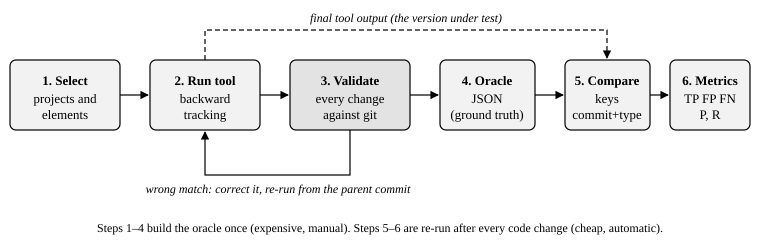
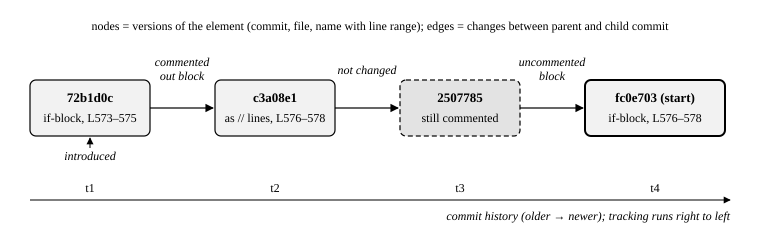
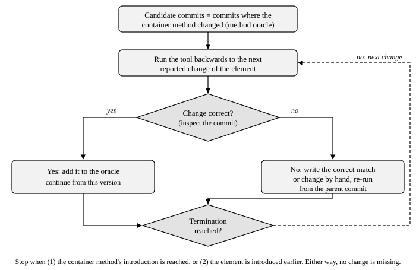
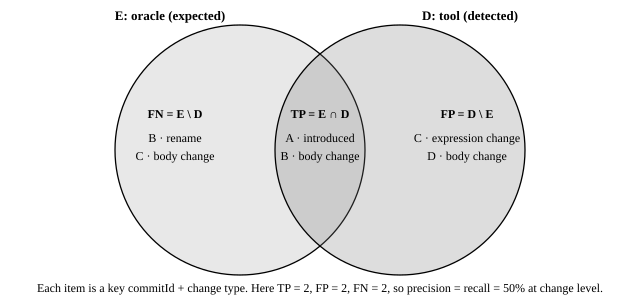
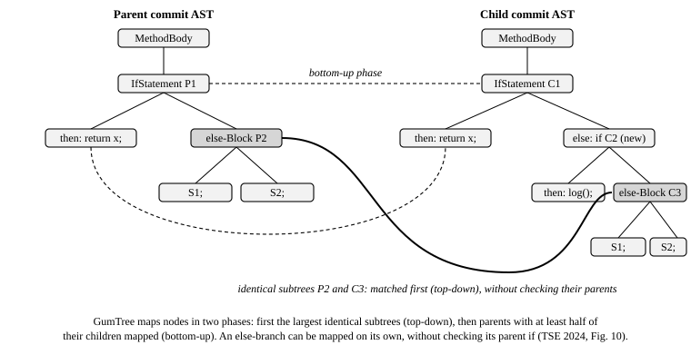
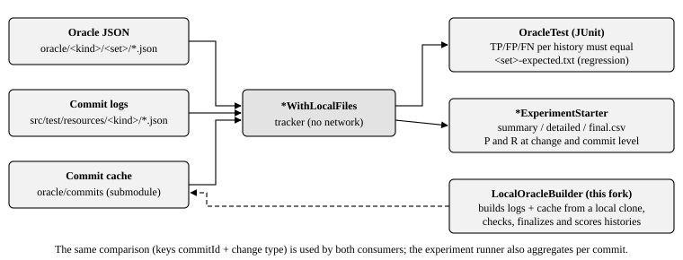

A Practical Guide to Oracles, Metrics and Baselines
for Refactoring-Aware Change-History Tools
Guide for students joining the CodeTracker project
November 2026
Abstract
CodeTracker reconstructs the commit change history of individual Java code elements: methods, variables, attributes, classes and code blocks. Its published evaluations (FSE 2022 for methods and variables, TSE 2024 for blocks) report precision and recall above 99%, measured against hand-validated oracles. This guide explains, for a reader new to empirical software engineering, how such an evaluation works in practice. It covers what an oracle is and how the CodeTracker oracles were built and corrected, and how true positives, false positives and false negatives are counted at commit level and at change level, exactly as the code in this repository does. It then shows how baselines such as CodeShovel, a GumTree-based tracker and git log -L are compared fairly, how to run the oracle tests and experiments, and how to build a new oracle for a new feature. As a worked example we use a 13-history oracle of commented-out and restored code mined from javaparser. Synthetic tests passed 27 of 27 scenarios on that feature, while the real histories exposed five failure causes. We close with a checklist of what a reviewer expects in an evaluation section.
Keywords: oracle, ground truth, precision, recall, empirical evaluation, change history, CodeTracker, RefactoringMiner, GumTree
A change-history tool answers a simple question: in which commits did this code element change, and how? Whether the answer is right can only be checked against a reference answer that humans have validated, called the oracle or ground truth. Most of the effort of an evaluation goes into the oracle. In the CodeTracker papers it took two person-months for methods and variables [1] and three person-months for blocks [2], while running the tool is cheap. A tool measured against a weak oracle is only measured against itself.
This guide is organised around the questions a new student usually has:
Figure 1 summarises the process.

Figure 1. The evaluation pipeline. The oracle is built once with manual validation (steps 1–4); the comparison and metrics (steps 5–6) run automatically after every code change.
A tracker starts at a start commit, where it locates the element by file, name and line numbers, and walks backwards through the commits that changed the file. It stops at the commit where the element was introduced. The result is a graph (Figure 2):
Change.Type, such as body change, rename, moved or expression change.For the evaluation, the graph is flattened into change records (parent commit, commit, time, change type, element before, element after). Records of type not changed are dropped.

Figure 2. The history of a real if block in javaparser (MethodResolutionLogic.isMoreSpecific), tracked from commit fc0e703. It yields three change records: introduced (72b1d0c), commented out block (c3a08e1) and uncommented block (fc0e703).
Every oracle instance (a history) is a JSON file under src/main/resources/oracle/<kind>/<set>/. Its locator fields (repository, file, element name, line numbers, start commit) tell the tracker what to track. Its expectedChanges list is the ground truth. All elements come from the same 20 open-source Java projects, for example checkstyle, commons-io, elasticsearch, hibernate, javaparser, jgit, junit5, okhttp and spring-framework. This is deliberate: each newer oracle was built inside the methods of the earlier, already validated one.
| Kind | Training | Test | Origin |
|---|---|---|---|
| Method | 100 | 100 | Grund et al. [3], corrected and extended in [1] |
| Variable | 1025 | 391 | [1]: all variables and parameters of the 200 methods |
| Block | 964 | 316 | [2]: all blocks of the 200 methods (6,093 changes) |
| Attribute | 358 | 122 | later CodeTracker work, same 20 projects |
| Class | 77 | 88 | later CodeTracker work, same 20 projects |
| Comment transition | 13 | this fork: javaparser, Section 8.2 | |
The training/test split comes from CodeShovel [3], whose thresholds were tuned on the training half. CodeTracker uses no thresholds, so it is not trained on either half. The split is kept so that results stay comparable with earlier papers.
Three supporting artefacts make the tests run offline:
src/test/resources/<kind>/*.json), which replace git log;oracle/commits submodule), which holds the changed files before and after each commit;<set>-expected.txt), with the TP, FP and FN the current tool obtains for each history.The expected files are a regression baseline, not ground truth.
The FSE 2022 paper [1] started from the oracle of Grund et al. [3]: 200 methods with about 100 hours of manual validation. Reusing it also made the comparison with CodeShovel fair. Running CodeTracker revealed systematic disagreements. In 27 methods (18 training, 9 test), the oracle had matched the tracked method with another method extracted from its body, and followed the wrong method from then on. These entries were removed and the correct history was added. Every changed entry was checked on GitHub, and the paper reports how many entries were kept, removed and added. Missing change kinds, such as annotation and documentation changes, were added and validated as well.
Validating 1,345 variables or 1,280 blocks entirely by hand is too costly. Both papers therefore use the same key observation: an element inside a method can only change in a commit where its method changed. The method oracle gives those candidate commits, and the tool proposes the changes. A human confirms or corrects every proposal (Algorithm 1, Figure 3). For blocks, a modified version of CodeTracker's Chrome extension showed each proposed commit's diff on GitHub, scrolled to the block [2].
| Algorithm 1 Semi-automated oracle construction for an element e in method m [1, 2] | |
| 1 | C ← commits in which m changed, from the method oracle |
| 2 | v ← version of e at the start commit |
| 3 | loop |
| 4 | (c, change, v′) ← next change of v reported by the tool in C |
| 5 | if a human confirms change by inspecting commit c then add change to the oracle; v ← v′ |
| 6 | else write the correct match or change by hand; v ← correct version; re-run from the parent of c |
| 7 | if c is the commit introducing m or e is introduced at c then return ▷ termination: nothing is missing |
| 8 | end loop |

Figure 3. The validation loop of Algorithm 1. Its two termination conditions guarantee that the oracle has no missing change between the start commit and the element's origin.
The block paper also wrote its matching criterion down. Two blocks are the same block when they share some common functionality, even if refactored or rewritten with other APIs. Blocks with different functionality are different, even if they sit at the same place in the control structure. Writing such definitions down before validating is what makes an oracle consistent.
| Paper | RQ | Question |
|---|---|---|
| FSE 2022 [1] | RQ1 | Method tracking accuracy, compared to CodeShovel |
| RQ2 | Variable tracking accuracy | |
| RQ3 | Execution time, compared to CodeShovel | |
| RQ4 | Speed-up over plain RefactoringMiner | |
| TSE 2024 [2] | RQ1 | Block tracking accuracy, compared to a GumTree-based baseline (and git log -L) |
| RQ2 | Execution time, compared to the GumTree baseline |
Every change, in the oracle and in the tool output, becomes a key made of its commit id and change type:
key = commitId + "-" + changeType (getChangeKey in OracleTest and AbstractExperimentStarter)
Two changes match exactly when their keys are equal; element names and paths are not compared. Three consequences follow:
Let E be the oracle's keys and D the tool's keys for one history (Figure 4):
Over a whole oracle, the counts are summed first, and precision and recall are computed from the sums. This is a micro-average, so long histories weigh more:
Precision answers how much of what the tool reports is right; recall answers how much of what happened the tool finds. The CodeTracker papers report both and do not use F1 (= 2PR / (P + R)).

Figure 4. TP, FP and FN as set operations on keys, for the worked example of Table 3.
At change level, keys are compared as above. At commit level, each history's keys are first reduced to their commit ids (calculateFinalResults). This measures only whether the right commits were found. Commit-level numbers are never worse than change-level ones.
| Level | TP | FP | FN | Precision | Recall |
|---|---|---|---|---|---|
| Change | 2 | 2 | 2 | 50% | 50% |
| Commit | 3 | 1 | 0 | 75% | 100% |
The experiment runner also writes TP/FP/FN per change type (summary-*.csv). This shows where errors concentrate and fills the papers' "instances per change kind" tables. Not counted are not changed; in the JUnit tests also signature format change, which is formatting only; and in the per-type columns changed multiple times and removed.
An accuracy number means little alone. The papers compare against the strongest available alternative, run on the same oracle, and state every fairness rule.
CodeShovel [3] was the state of the art for methods. Because its change vocabulary is coarser, the FSE paper counted its coarse reports as TPs: for example, a single ParameterChange covering CodeTracker's finer parameter kinds, and a BodyChange for comment-only edits.
No tool tracked blocks, so the TSE paper built baselines:
git log -L baseline traces the block's line range. It returns commits only, so it is evaluated at commit level only.
Figure 5. Why a general-purpose AST differ can mis-track blocks. An else branch that is an identical subtree is mapped in GumTree's top-down phase, although its parent if changed. The TSE paper discusses a real case of this (its Fig. 10).
The paper stated these fairness rules:
git log -L reports before the true introduction are not counted as FPs.git log -L is restarted after whole-file reformatting commits.| Element | Level | Tool | TP | FP | FN | Precision | Recall |
|---|---|---|---|---|---|---|---|
| Method | commit | CodeShovel | 3527 | 287 | 139 | 92.48 | 96.21 |
| commit | CodeTracker | 3664 | 1 | 0 | 99.97 | 100 | |
| change | CodeShovel | 4327 | 440 | 270 | 90.77 | 94.13 | |
| change | CodeTracker | 4594 | 6 | 3 | 99.87 | 99.93 | |
| Variable | commit | CodeTracker | 1971 | 3 | 1 | 99.85 | 99.95 |
| change | CodeTracker | 2037 | 7 | 3 | 99.66 | 99.85 | |
| Block | commit | GumTree baseline | 4735 | 271 | 929 | 94.59 | 83.60 |
| commit | git log -L | 4730 | 1689 | 934 | 73.69 | 83.51 | |
| commit | CodeTracker | 5651 | 12 | 13 | 99.79 | 99.77 | |
| change | GumTree baseline | 4798 | 607 | 1296 | 88.77 | 78.73 | |
| change | CodeTracker | 6063 | 31 | 31 | 99.49 | 99.49 |
Every remaining error of the proposed tool is explained. The FSE paper traces its few FPs to a method-merge case in javaparser and to RefactoringMiner reporting a FileMove instead of a MoveMethod. The TSE paper shows each error pattern on a real diff. It turns each pattern into an Insight that states the exact conditions under which the tool fails, and it explains the baselines' errors in the same way. It also explains differences between the training and test sets: longer histories make an early miss cost more FNs.
Execution time is measured per tracked element with System.nanoTime, on one documented machine, with repositories cloned beforehand. It is reported as median and average, shown in log-scale box plots, and broken down by tracking step. CodeTracker took 3.35 s median per method [1] and 2 s median per block, against 10 s for the GumTree baseline [2].

Figure 6. How the evaluation code fits together. Both consumers use the same key comparison.
Oracle tests (mvn test -Dtest=BlockOracleTest, and likewise for the other kinds) run each history with the offline tracker. A history passes when its TP/FP/FN equal its line in <set>-expected.txt. They are regression tests: they detect change, not imperfection. They take more than an hour for all kinds, so run them in the background and do not compile in the same checkout meanwhile. In this fork, pom.xml mixes JUnit 5.8.2 and 5.10.0. Use a temporary pom aligned to 5.10.0 (docs/comment-transition/tools/run-oracles.sh).
Experiment runners (org.codetracker.experiment.<Kind>ExperimentStarter) write summary, detailed and final.csv files under experiments/tracking-accuracy/. final.csv holds the paper-style numbers per set and level.
Regression protocol after a change.
git worktree add at the commit before your change) and on your final checkout.CompareOracle.java).git show.git log -L and with a check that flags unreported commits touching the element. Verify the origin: was the element moved, extracted or renamed?Tooling in this fork
LocalOracleBuilder (test scope) implements steps 4–7 on a local clone. Its modes:
<kind> runs the tool, and writes the commit logs and the cache;check gives evidence for validation;finalize applies the verdict;score computes TP/FP/FN exactly as the tests do;cache rebuilds the offline cache without network.MineCommentTransitions.java and blockevo.sh support mining and validation.
The comment-transition feature of this fork passed all 27 synthetic scenarios. To measure it on real code, the full histories of javaparser (10,039 commits) and elasticsearch (100,544 commits) were mined. This produced 303 comment-out/uncomment events and 45 same-file pairs. From them, 27 histories were selected and validated with the recipe above: 11 blocks, 10 methods, 4 variables and 2 attributes.
| Measure | TP | FP | FN | Precision | Recall |
|---|---|---|---|---|---|
| javaparser (13), all change types | 51 | 3 | 13 | 94.4% | 79.7% |
| elasticsearch (14), all change types | 18 | 9 | 65 | 66.7% | 21.7% |
| Both, all change types | 69 | 12 | 78 | 85.2% | 46.9% |
| Both, comment-transition types only | 18 | 1 | 27 | 94.7% | 40.0% |
| After the fix, 42 histories incl. checkstyle, all change types | 204 | 6 | 27 | 97.1% | 88.3% |
Six lessons follow from this example:
// source is always enabled for now) or a marker inside it (// } NOCOMMIT fix this). The commented text then no longer parses as Java, and the restoration is missed. This explains 8 of the 14 elasticsearch misses. No synthetic scenario contained it.The main lesson: an evaluation is useful when it shows where a tool fails, not only where it succeeds.
OracleTest keys expected values by file name in shared static maps.expected.txt as ground truth. It is the tool's current score.commitTime order is ancestry order. Rebased histories break this.[1] M. Jodavi and N. Tsantalis, "Accurate Method and Variable Tracking in Commit History," in Proc. 30th ACM ESEC/FSE, Singapore, 2022. doi:10.1145/3540250.3549079.
[2] M. T. Hasan, N. Tsantalis and P. Alikhanifard, "Refactoring-aware Block Tracking in Commit History," IEEE Transactions on Software Engineering, 2024. doi:10.1109/TSE.2024.3484586.
[3] F. Grund, S. Chowdhury, N. C. Bradley, B. Hall and R. Holmes, "CodeShovel: Constructing Method-Level Source Code Histories," in Proc. 43rd ICSE, 2021.
[4] J.-R. Falleri, F. Morandat, X. Blanc, M. Martinez and M. Monperrus, "Fine-grained and Accurate Source Code Differencing," in Proc. 29th ACM/IEEE ASE, 2014.
[5] A. Fujimoto, Y. Higo, J. Matsumoto and S. Kusumoto, "Staged Tree Matching for Detecting Code Move across Files," in Proc. 28th ICPC, 2020.